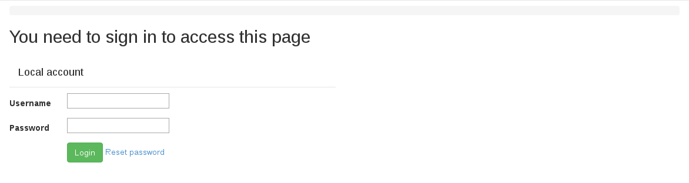
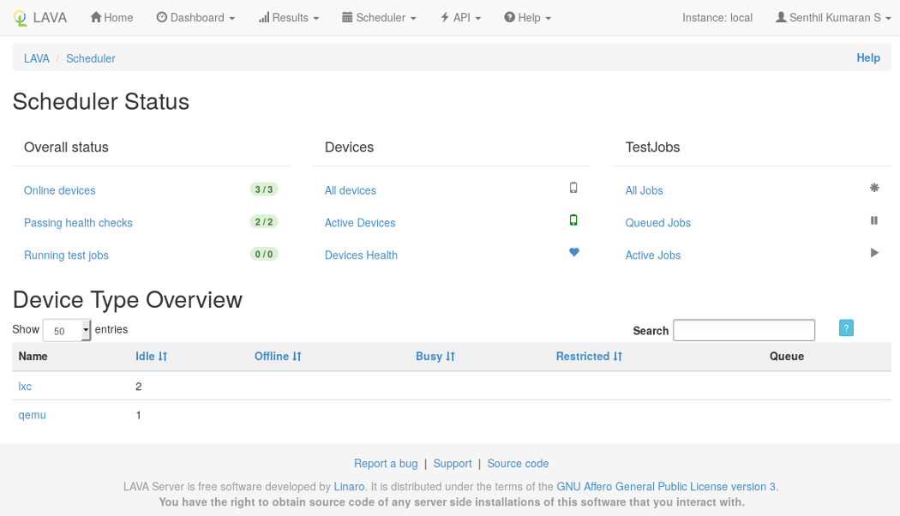
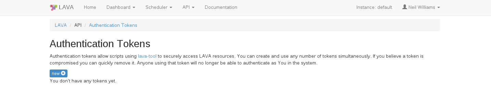
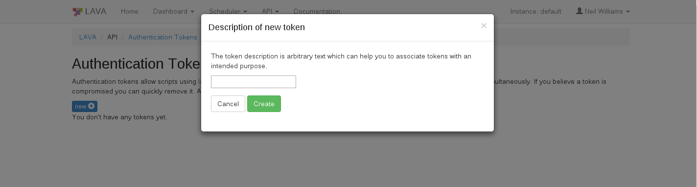
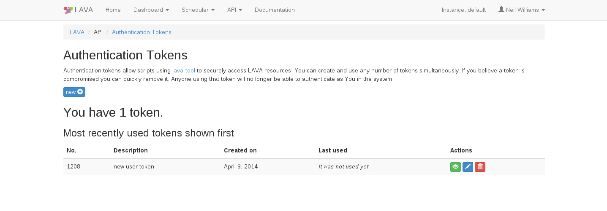
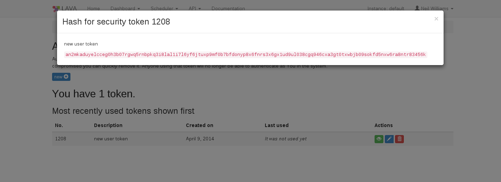

Each LAVA instance offers a Local User Account and may also be configured to an alternative authentication method:
See also
Configuring user authentication for more information.
LDAP authentication relies on local configuration and may involve obtaining a privileged access token from the LDAP administrators.
Local accounts remain available for all instances.
Whichever authentication method is used, there is no difference in how users interact with LAVA once logged in.
A local user account may be created by an administrator within LAVA. The administrator may grant different permissions to the user to perform various operations within LAVA. A typical login screen will look something like the following.
To log in with a username and password, enter your credentials in the provided text boxes and click “Login” button.
Local user accounts can be particularly useful for automated users like build systems or continuous integration scripts using the XML-RPC API. In this case, a local admin can create the user with a secure password, log in as that user to create an authentication token and then supply the token to the scripts.
Linaro’s central validation lab in Cambridge is accessible via https://validation.linaro.org/ . It is Linaro’s core production instance of LAVA.
This lab is configured to use Linaro LDAP. To log in, enter your details in the LDAP login fields.
Note
If your Linaro email is first.second@linaro.org then use
first.second as your username.
A successful authentication will redirect you to https://validation.linaro.org/
If you do not have a Linaro LDAP account, you can register at https://register.linaro.org/.
After logging in, the LAVA scheduler page will look something like the following:
In order to securely access LAVA resources via XML-RPC APIs using lavacli or XML-RPC clients, users first need to create an authentication token.
Once logged in to a LAVA instance (e.g. https://validation.linaro.org/), click on the “API” link then on the “Authentication Tokens” link from the drop down menu. The following page will appear
Click on the “New” button on the above page which raises a dialog box asking for a description of the token to help you identify and delete tokens - if required at a later stage.
Click on the “Create” button to generate the token. The token will be assigned a token number (which is autogenerated by LAVA).
To display the token that was generated above click on the green “Display this token” button in the Actions column on the above page.
If a token is compromised, it can be removed by clicking on the red “delete this token” button in the Actions column. Anyone using that token will then no longer be able to authenticate as you in the system.